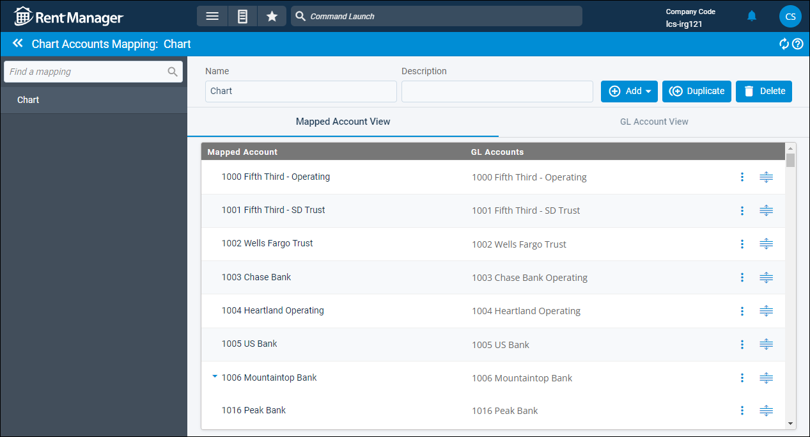
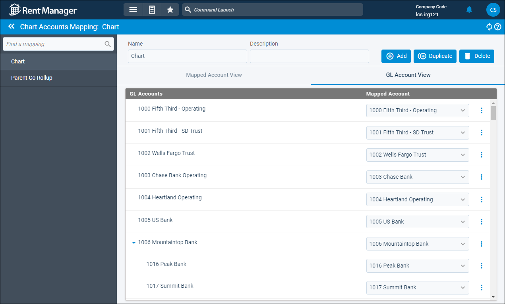

Source: https://rmxhelp.rentmanager.com/Topics/Express/CSH/Chart-Accounts-Mapping.htm
Chart Accounts Mapping (Page)
While Rent Manager contains a master chart of accounts that is used for all properties, some users find that tracking and reporting accounting data for specific report recipients require a variety of bookkeeping and reporting standards to be met. Through chart of accounts mapping, users can customize the appearance and naming structure of individual general ledger (GL) accounts to meet the needs of various report recipients.
Users can map, or tailor, any GL accounts by creating a chart of accounts mapping. This mapping can contain any number of mapped, or virtual, accounts linked to one or more chart accounts as a way to retrieve specific information depending on the type of output needed on individual reports. These mapped accounts can be named as needed depending on the standards of the recipient for whom you are generating the reports. When a report is generated with a mapping selected in the report options, Rent Manager displays the information as you designed it.
Related Privileges
| Group | Privilege | Column |
|---|---|---|
| Accounting | Chart mappings | View |
For more information, refer to Control User Access.
To open the Chart Accounts Mapping page, go to  arrow_forward Accounting arrow_forward General arrow_forward Chart Accounts Mapping.
arrow_forward Accounting arrow_forward General arrow_forward Chart Accounts Mapping.
More Information
When generating a report with a Mapping selected in the report options, all mapped accounts display above the unmapped GL accounts. To change the order of the mapped accounts, on the Chart Accounts Mappings page, click and hold  to drag and drop the mapped account to the desired position in the list.
to drag and drop the mapped account to the desired position in the list.
Mapped Account View
This tab displays each mapped account that was created for the selected mapping, along with the existing GL accounts that are linked to it. Also known as virtual accounts, these accounts only impact the optics of a report, meaning that information on the chart of accounts does not change.

The following columns are available:
| Column | Description |
|---|---|
|
Mapped Account |
Accounts created through chart of accounts mapping that are used to reorganize how GL accounts are grouped and displayed in financial reports. Mapped accounts can either have the same name and GL account number of an actual chart account, or it could have a new name and GL account number that exists only in the chart of account mapping. |
|
GL Account |
GL accounts associated with a mapped account through chart of accounts mapping are considered to be linked to the mapped account. Financial data tied to any of the linked accounts display as part of the mapped account in reports generated with the chart of accounts mapping selected. |
GL Account View
This tab displays every GL account in the chart of accounts and each mapped account that has GL accounts linked to it.

The following columns are available:
| Column | Description |
|---|---|
|
GL Account |
GL accounts associated with a mapped account through chart of accounts mapping are considered to be linked to the mapped account. Financial data tied to any of the linked accounts display as part of the mapped account in reports generated with the chart of accounts mapping selected. |
|
Mapped Account |
Accounts created through chart of accounts mapping that are used to reorganize how GL accounts are grouped and displayed in financial reports. Mapped accounts can either have the same name and GL account number of an actual chart account, or it could have a new name and GL account number that exists only in the chart of account mapping. |